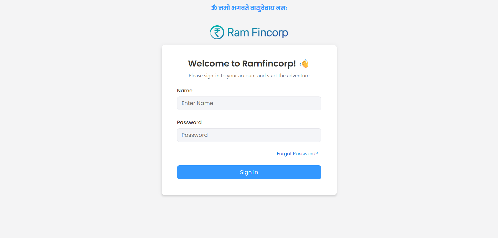
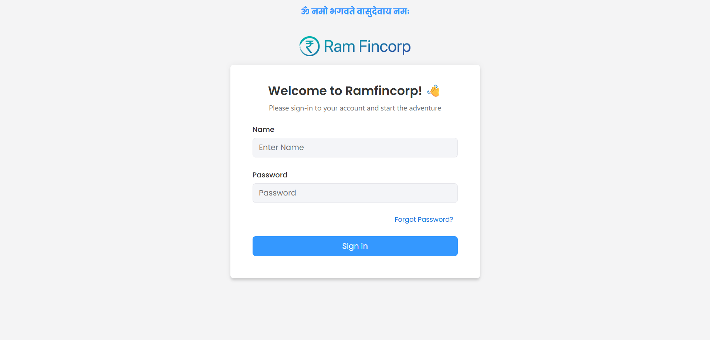

-
Search Filter Testing
5:21:50 PM / 00:01:02:109 Fail
Search Filter Testing
07.02.2025 5:21:50 PM 07.02.2025 5:22:52 PM 00:01:02:109 · #test-id=1PassSuccessful LognWhen the user is in the CRM pageFailSearchByFeatureFailSearchByFeatureWhen the user should test Search filter by passing Name,MobileNo,CustID,LeadID,LoanNo,Email,PAN,Aadhar,with excel row "1"Hooks.Hooks.addScreenshot(io.cucumber.java.Scenario)SearchByFeature FailSearchByFeatureWhen the user should test Search filter by passing Name,MobileNo,CustID,LeadID,LoanNo,Email,PAN,Aadhar,with excel row "2"Hooks.Hooks.addScreenshot(io.cucumber.java.Scenario)FailSearchByFeatureWhen the user should test Search filter by passing Name,MobileNo,CustID,LeadID,LoanNo,Email,PAN,Aadhar,with excel row "3"Hooks.Hooks.addScreenshot(io.cucumber.java.Scenario)SearchByFeature
FailSearchByFeatureWhen the user should test Search filter by passing Name,MobileNo,CustID,LeadID,LoanNo,Email,PAN,Aadhar,with excel row "2"Hooks.Hooks.addScreenshot(io.cucumber.java.Scenario)FailSearchByFeatureWhen the user should test Search filter by passing Name,MobileNo,CustID,LeadID,LoanNo,Email,PAN,Aadhar,with excel row "3"Hooks.Hooks.addScreenshot(io.cucumber.java.Scenario)SearchByFeature FailSearchByFeatureWhen the user should test Search filter by passing Name,MobileNo,CustID,LeadID,LoanNo,Email,PAN,Aadhar,with excel row "4"Hooks.Hooks.addScreenshot(io.cucumber.java.Scenario)SearchByFeature
FailSearchByFeatureWhen the user should test Search filter by passing Name,MobileNo,CustID,LeadID,LoanNo,Email,PAN,Aadhar,with excel row "4"Hooks.Hooks.addScreenshot(io.cucumber.java.Scenario)SearchByFeature
-
org.openqa.selenium.remote.UnreachableBrowserException
2 tests
org.openqa.selenium.remote.UnreachableBrowserException
2 failedStatus Timestamp TestName Fail 17:22:16 PM When the user should test Search filter by passing Name,MobileNo,CustID,LeadID,LoanNo,Email,PAN,Aadhar,with excel row "2" Search Filter Testing.SearchByFeature.When the user should test Search filter by passing Name,MobileNo,CustID,LeadID,LoanNo,Email,PAN,Aadhar,with excel row "2"Fail 17:22:26 PM Hooks.Hooks.addScreenshot(io.cucumber.java.Scenario) Search Filter Testing.SearchByFeature.Hooks.Hooks.addScreenshot(io.cucumber.java.Scenario) -
org.openqa.selenium.NoSuchElementException
3 tests
org.openqa.selenium.NoSuchElementException
3 failedStatus Timestamp TestName Fail 17:22:04 PM When the user should test Search filter by passing Name,MobileNo,CustID,LeadID,LoanNo,Email,PAN,Aadhar,with excel row "1" Search Filter Testing.SearchByFeature.When the user should test Search filter by passing Name,MobileNo,CustID,LeadID,LoanNo,Email,PAN,Aadhar,with excel row "1"Fail 17:22:28 PM When the user should test Search filter by passing Name,MobileNo,CustID,LeadID,LoanNo,Email,PAN,Aadhar,with excel row "3" Search Filter Testing.SearchByFeature.When the user should test Search filter by passing Name,MobileNo,CustID,LeadID,LoanNo,Email,PAN,Aadhar,with excel row "3"Fail 17:22:41 PM When the user should test Search filter by passing Name,MobileNo,CustID,LeadID,LoanNo,Email,PAN,Aadhar,with excel row "4" Search Filter Testing.SearchByFeature.When the user should test Search filter by passing Name,MobileNo,CustID,LeadID,LoanNo,Email,PAN,Aadhar,with excel row "4"
Started
Jul 2, 2025 05:21:49 PM
Ended
Jul 2, 2025 05:22:52 PM
Features Passed
0
Features Failed
1
Features
Scenarios
Steps
Timeline